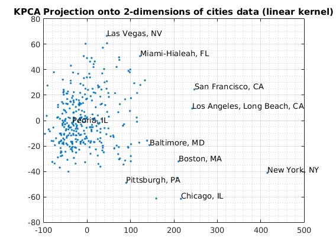
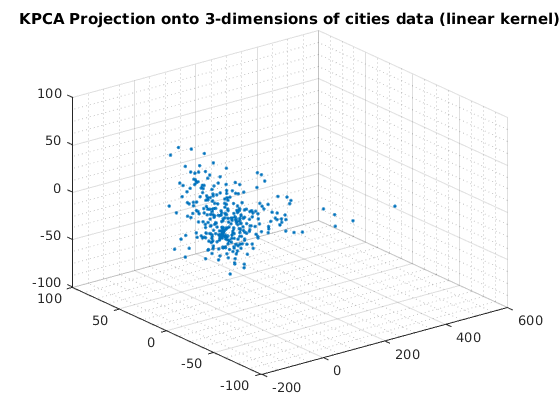
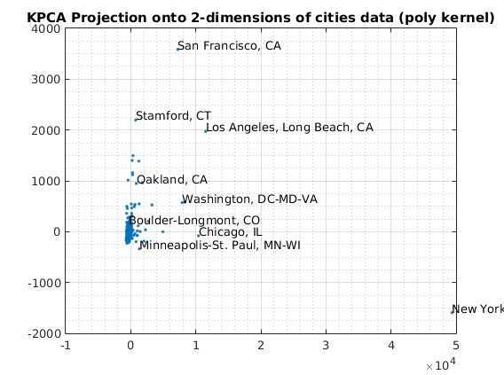
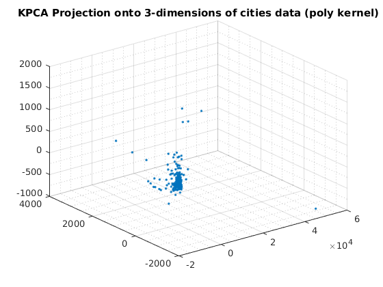
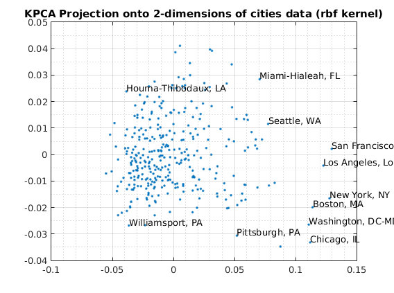
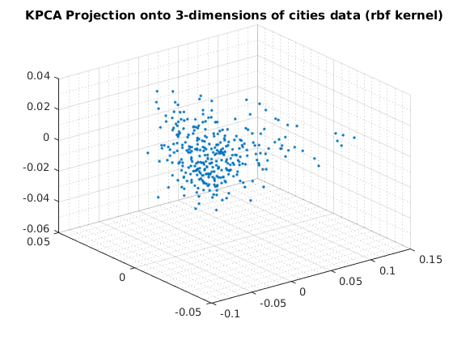

Contents
Description
Demonstrates outlier detection methods using dimensionality reduction with kernelized PCA. 9-dimensional City Ratings dataset is projected onto 2 and 3 dimensional spaces.
close all clear all f=1;
Outlier detection with Kernel PCA: linear, polynomial, and rbf kernels
load cities.mat
X = ratings;
usage of KPCA with default options
Reduce to 2-dimensions with KPCA
options = struct('maxComponents',2); model = ml_unsupervised_dimRedKPCA(X,options); Xreduced = model.reduceFunc(model,X); figure(f);f=f+1; plot(Xreduced(:,1),Xreduced(:,2),'.'); title('KPCA Projection onto 2-dimensions of cities data (linear kernel)'); fprintf('Click plot to name cities, press any key to continue\n'); gname(names) grid on grid minor % Reduce to 3-dimensions with KPCA options = struct('maxComponents',3); model = ml_unsupervised_dimRedKPCA(X,options); Xreduced = model.reduceFunc(model,X); figure(f);f=f+1; plot3(Xreduced(:,1),Xreduced(:,2),Xreduced(:,3),'.'); grid on grid minor title('KPCA Projection onto 3-dimensions of cities data (linear kernel)'); pause
Number of Components selected: 2 Variance explained by basis: 0.51 Click plot to name cities, press any key to continue Number of Components selected: 3 Variance explained by basis: 0.64 
usage of KPCA with polynomial basis
Reduce to 2-dimensions with KPCA
kernelArgs = struct('bias',0,'order',2); options = struct('maxComponents',2,'kernelFunc',@ml_kernel_poly,... 'kernelArgs',kernelArgs); model = ml_unsupervised_dimRedKPCA(X,options); Xreduced = model.reduceFunc(model,X); figure(f);f=f+1; plot(Xreduced(:,1),Xreduced(:,2),'.'); grid on grid minor title('KPCA Projection onto 2-dimensions of cities data (poly kernel)'); fprintf('Click plot to name cities, press any key to continue\n'); gname(names) % Reduce to 3-dimensions with KPCA kernelArgs = struct('bias',0,'order',2); options = struct('maxComponents',3,'kernelFunc',@ml_kernel_poly,... 'kernelArgs',kernelArgs); model = ml_unsupervised_dimRedKPCA(X,options); Xreduced = model.reduceFunc(model,X); figure(f);f=f+1; plot3(Xreduced(:,1),Xreduced(:,2),Xreduced(:,3),'.'); grid on grid minor title('KPCA Projection onto 3-dimensions of cities data (poly kernel)'); pause
Number of Components selected: 2 Variance explained by basis: 0.71 Click plot to name cities, press any key to continue Number of Components selected: 3 Variance explained by basis: 0.75 
usage of KPCA with rbf basis
Reduce to 2-dimensions with KPCA
kernelArgs = struct('sigma',10); options = struct('maxComponents',2,'kernelFunc',@ml_kernel_rbf,... 'kernelArgs',kernelArgs); model = ml_unsupervised_dimRedKPCA(X,options); Xreduced = model.reduceFunc(model,X); figure(f);f=f+1; plot(Xreduced(:,1),Xreduced(:,2),'.'); grid on grid minor title('KPCA Projection onto 2-dimensions of cities data (rbf kernel)'); fprintf('Click plot to name cities, press any key to continue\n'); gname(names) % Reduce to 3-dimensions with KPCA kernelArgs = struct('sigma',10); options = struct('maxComponents',3,'kernelFunc',@ml_kernel_rbf,... 'kernelArgs',kernelArgs); model = ml_unsupervised_dimRedKPCA(X,options); Xreduced = model.reduceFunc(model,X); figure(f);f=f+1; plot3(Xreduced(:,1),Xreduced(:,2),Xreduced(:,3),'.'); grid on grid minor title('KPCA Projection onto 3-dimensions of cities data (rbf kernel)');
Number of Components selected: 2 Variance explained by basis: 0.45 Click plot to name cities, press any key to continue Number of Components selected: 3 Variance explained by basis: 0.58 